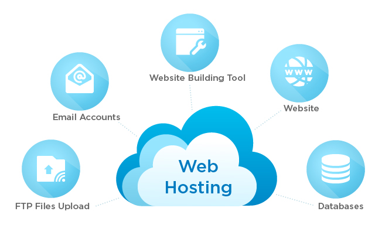

World Wide Web(WWW)
The World Wide Web(usually referred to as just the Web) is a way of transmitting data over the internet using the HTTP protocol and html. The web can be summarised as a series of interactions between 2 types of systems: clients and servers.
Clients are the devices the request and render the web content. Popular clients include browsers, mobile applications, screen readers and various content aggregators. We live in and increasingly connected world and the number of clients that can access web content is growing rapidly. In fact trying to keep up with an the new clients and how they access and render you content is one of most changeling aspects of web design.
Servers are applications that deliver web content or services to clients. There is a wide range or web servers and types that specialise in specific types of data or specific processing capabilities. They’re all involved in some way in delivering the content that you request or the services that you need performed
HTTP
HyperText Transfer Protocol(HTTP) is the backbone of the internet and is an underlying protocol used by the Web and it defines how messages are formatted and transmitted and what actions web servers and browsers should take in response to various commands.
It is a client-server protocol so communication between clients and servers is done by request and response cycles. Browser requests an HTML page. Server returns a HTML file Browser requests a style sheer. Server returns a CSS file. And so on…

Each individual request is sent to a server, which handles and provide an answer called the response. Between the client and the server there are numerous entities called proxies, that perform different operations. HTTP can also be used to fetch parts of documents to update Web Pages on demand
HOSTING
Web hosting is a service that allows organizations and individuals to post a website onto the internet. A web host (or provider) is a business that provides technologies and services needs for the website or webpage to be viewed in the internet. Website are hosted in special computers called servers.
When you host you website with a provider, some features are included such as email accounts, FTP access(where you can upload your website files onto the server from your local computer) and WordPress support.There are several different ways of hosting websites such as:
- a. Shared hosting: server space is shared with other websites. It is more affordable but you have the risk of the server getting overloaded which will make you website slow.
- b. WordPress: if you use this website creation toll you might want to purchase a hosting package with them too to optimize your website
- c. Dedicated hosting: Gives you complete/administrative control of the server with full root access.
- d. VPS hosting: it’s a higher stronger more advances form of shared hosting but you are assigned resources that are not shared with other properties.